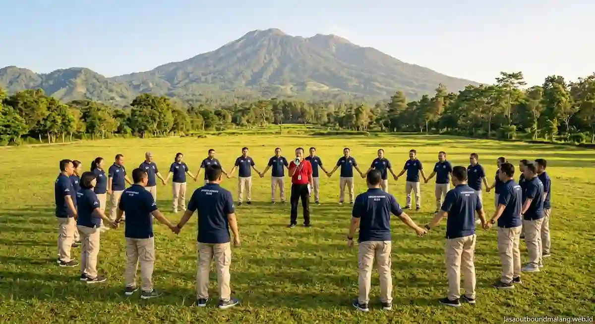

Apa Itu Jasa Outbound dan Mengapa Malang Menjadi Pilihan?
Outbound adalah kegiatan belajar melalui pengalaman. Peserta tidak sekadar mendengarkan materi, tetapi terlibat langsung dalam permainan, tantangan, dan diskusi refleksi. Dari situ, nilai seperti kepemimpinan, komunikasi, dan saling percaya muncul secara alami. Jasa outbound berperan menyiapkan seluruh rangkaian tersebut, mulai dari rancangan program, fasilitator, peralatan, sampai pengelolaan keselamatan di lapangan.
Malang Raya menjadi tujuan favorit karena udaranya sejuk, pemandangannya beragam, dan pilihan lokasinya banyak. Area Batu, Pujon, dan sekitarnya memiliki lahan terbuka, kawasan wisata, serta tempat menginap yang mudah diakses dari Surabaya maupun dari dalam kota. Suasana yang segar membuat peserta lebih rileks, sehingga permainan berjalan lebih hidup dan pesan kegiatan lebih mudah diterima.
Jenis Program yang Biasa Ditawarkan Jasa Outbound di Malang
Setiap kelompok punya kebutuhan berbeda. Karena itu, vendor yang baik biasanya menawarkan beberapa jenis program yang dapat dikombinasikan.
| Jenis Program | Gambaran Isi | Cocok Untuk |
|---|---|---|
| Team Building Perusahaan | Permainan kerja sama, simulasi pemecahan masalah, dan sesi refleksi | Tim kantor, divisi, dan manajemen |
| Gathering dan Family Gathering | Permainan santai, lomba antartim, dan kegiatan bersama keluarga | Perusahaan, instansi, dan komunitas |
| Outbound Pelajar dan Mahasiswa | Permainan edukatif, kepemimpinan, dan kekompakan kelas | Sekolah, kampus, dan organisasi siswa |
| Outbound Anak | Permainan aman dan ringan dengan pendampingan ekstra | Anak usia dini sampai sekolah dasar |
| Leadership dan Pelatihan Khusus | Kombinasi materi di ruangan dan aktivitas lapangan | Manajer, calon pemimpin, dan pengurus |
Contoh di atas hanya gambaran umum. Rancangan sebenarnya disesuaikan dengan jumlah peserta, durasi, anggaran, dan tujuan yang ingin dicapai.

Bagaimana Cara Memilih Jasa Outbound Malang yang Terpercaya?
Banyak penyedia layanan menawarkan paket yang tampak serupa. Perbedaan sesungguhnya ada pada kualitas fasilitator, standar keselamatan, dan kemampuan menyesuaikan program. Gunakan kriteria berikut sebagai pegangan saat membandingkan vendor:
- Pengalaman dan Rekam Jejak: Tanyakan jenis klien yang pernah ditangani dan minta contoh kegiatan serupa. Vendor yang berpengalaman biasanya mudah menjelaskan alur acara secara rinci.
- Standar Keselamatan: Pastikan ada briefing keselamatan, peralatan yang layak, dan pendamping yang siap menangani kondisi darurat, termasuk kotak P3K.
- Kualitas Fasilitator: Fasilitator bukan sekadar pemandu permainan. Ia perlu mampu membaca suasana kelompok dan memandu refleksi agar pesan kegiatan tersampaikan.
- Fleksibilitas Program: Vendor yang baik bersedia menyesuaikan permainan dengan usia, kondisi fisik, dan tujuan Anda, bukan hanya menjual paket baku.
- Transparansi Biaya: Minta rincian apa saja yang termasuk dan tidak termasuk dalam penawaran, seperti konsumsi, transportasi, dokumentasi, dan perlengkapan.
- Rencana Cadangan: Tanyakan apa yang dilakukan bila hujan atau jumlah peserta berubah di menit terakhir.
Apa yang Mempengaruhi Biaya Jasa Outbound?
Tidak ada satu angka yang berlaku untuk semua kegiatan. Biaya dipengaruhi beberapa faktor utama: jumlah peserta, lama kegiatan, pilihan lokasi, tingkat kerumitan permainan, serta layanan tambahan seperti konsumsi, transportasi, dokumentasi, dan penginapan. Kegiatan setengah hari di lokasi sederhana tentu berbeda anggarannya dengan program dua hari satu malam di kawasan wisata.
Agar perbandingan adil, sampaikan kebutuhan yang sama kepada setiap vendor, lalu bandingkan isi penawaran, bukan hanya totalnya. Penawaran termurah belum tentu paling hemat jika banyak komponen penting yang belum termasuk.
Bagaimana Mempersiapkan Kegiatan Outbound agar Berjalan Lancar?
Persiapan yang matang menentukan hasil kegiatan. Mulailah dengan menetapkan tujuan yang jelas, misalnya meningkatkan kekompakan, menyegarkan suasana kerja, atau melatih kepemimpinan. Tujuan ini membantu vendor memilih permainan yang paling relevan.
Setelah itu, kumpulkan data peserta: jumlah, rentang usia, dan kondisi kesehatan yang perlu diperhatikan. Informasikan jadwal, lokasi, serta pakaian dan perlengkapan yang perlu dibawa sebelum hari pelaksanaan. Daftar lengkapnya tersedia di artikel checklist perlengkapan peserta outbound Batu Malang.
Anda juga dapat menyiapkan ide permainan sejak awal. Contoh pilihan yang seru ada di artikel 7 rekomendasi game outbound team building seru di Batu Malang, sehingga diskusi dengan vendor bisa lebih terarah.
Bagaimana Menilai Keberhasilan Kegiatan Outbound?
Kegiatan yang menyenangkan belum tentu memberi dampak. Karena itu, lakukan penilaian dalam dua tahap: segera setelah acara untuk melihat kesan awal, lalu beberapa minggu kemudian untuk mengamati perubahan dalam komunikasi dan kerja sama sehari-hari.
Kesalahan Umum Saat Memesan Jasa Outbound
Agar kegiatan berjalan sesuai harapan dan memberikan hasil maksimal, hindari beberapa kekeliruan umum berikut:
- Memilih hanya berdasarkan harga, sehingga aspek keselamatan dan kualitas fasilitator terabaikan.
- Tidak menentukan tujuan kegiatan, akibatnya permainan terasa seru tetapi tidak relevan.
- Memesan terlalu mepet, sehingga lokasi dan jadwal pilihan sudah penuh.
- Mengabaikan kondisi peserta, seperti rentang usia, kebugaran, atau kebutuhan khusus.
- Tidak ada tindak lanjut, sehingga semangat kegiatan hilang setelah acara selesai.